Functionality¶
Terminology¶
The program operates with four geometric object types: contour, 2d grid, surface, 3d grid. All of these objects are described in a discretized form by a set of vertices supplied with connectivity tables. Each object has its own unique internal name which is used for addressing.
Contour is a set of points connected in a defined order with each contour section bearing a boundary type feature. Contour can be open or closed or even multiply-connected (bounding a multiply connected domain). Their direction could not be set implicitly.
2D grid is a set of cells which are defined as a sequences of edges. Grid cell can have arbitrary number of vertices, the only restriction applied to a grid cell is that it can not be multiply connected.
Surface is a collection of faces which are given by edges list. As well as contours there are no restriction on the surface geometry.
3D grid is a set of 3D cells each of which is a closed surface.
Warning
Not every grid format supports arbitrary cells. Most FEM grids (like those used in GMsh) could contain only predefined (triangular or quadrangular for 2D) cell types. This should be taken into account during grid exporting.
Each grid contains its own bounding contour which is referenced as a grid contour or grid surface. It includes all boundary nodes of the grid along with grid boundary features. Most procedures which take contour/surface as an invariable input parameter (e.g. set boundary types, exclude contour from a grid etc.) could also accept grid contours addressed by a grid internal name.
Boundary type is a non-geometric object which is defined by integer positive boundary index (zero is the default value for non-defined segments) and (optionally) a unique boundary name. Grid exporting procedures try to use boundary names and indices if export format supports it.
Data Access¶
Internal structure of geometric object could not be
explicitly changed by user. However readlonly access is possible.
HybMesh sctipting interface provides a set of tab functions
which return vertices coordinates and different connectivity tables as
plain 1D arrays by a given table name. See documentation of
tab_cont2(), tab_grid2(), tab_surf3(), tab_grid3()
for details. In wrapper interfaces
some of those tables can be access via
get_vertices
and get_tab methods.
Note, that the latter function returns array of integers.
Hence only tables given by array of integers could be accessed.
An alternative way to read hybmesh geometry is to export it to external file using supported format and parse it. Currently export to ascii VTK, Tecplot, Fluent mesh, GMsh formats is implemented. HybMesh also has its own native data format which supports both binary and ascii data. See list of script interface export functions for details.
Grid Superposition¶
This is the basic HybMesh operation. Generally it takes two independent grids which have non-zero domain intersection and composes them into a single grid. The domain of resulting grid is exactly equal to the domain of geometrical union of parent grid domains and its cells reflect the original grids cells everywhere except for a zone around the line of parent grids contact which is triangulated providing smooth cell size transition. This zone is later referenced as a buffer zone.
Order of superposition matters. For clarity sake we call the first of two original grids the base grid and the second one – overlaid grid. Buffer is always built within the base grid. Cells of overlaid grid are transfered to the resulting grid mostly untouched (except for a few boundary vertices near grids intersection zone. See Fix boundary nodes for details). So, as you can see on the picture below, by swapping the grid roles we obtain different resulting grid geometry.
{kind=link}
fig. 1. Basic superposition example
Hybmesh also supports superposition of grid chain. In this regime a sequence of superposition operations are performed over a list of grids. Each operation takes the result of previous one as a base grid and use the next grid in given list as an overlaid grid. You should carefully define the order of grids in a input list to get desirable result. On a picture below you can see the superposition result depending on given grids order.
{kind=link}
fig. 2. Chain superposition example
Superposition with building a buffer grid only takes place if parent grid has non-zero and non single point intersection area. Different operation results depending on relative position of input grids are presented below.
{kind=link}
fig3. Superposition depending on types of given grid intersections.
If grid domains have no proper intersections (two last examples on the picture above) then the resulting grid will contain cells from both given grids assembled to a single connectivity table. When grids have zero intersection but a common boundary segment (second example on the picture above) buffer will be built. For such cases consider using of snapping function to snap base grid to overlaid grid contour and guarantee exact connection of grid domains.
Boundary features of superposed grid contour reflect boundary features of given grids. If any boundary segment is contained in both base grid and overlaid grid then priority will be given to features from the latter.
Buffer zone size¶
Buffer zone is constructed as an area of all base grid cells which contain a vertex located no further than given buffer zone size from contact line. Larger buffer zone provides smoother triangle grid within the buffer (see picture below).
{kind=link}
fig4. Superposition with different buffer sizes
Sometimes it is useful to superpose grids without building triangulated buffer. This could be done by setting zero buffer zone size. However, if vertices of base grid and overlaid grid do not coincide at contact line superposed grid will contain hanging nodes (see second example at picture below). The necessity of superposing grids with zero buffer could be arisen e.g. while connecting grid to an outer boundary grid built from its own contour.
{kind=link}
fig5. Superposition with zero buffer size
Fix boundary nodes¶
This option defines treatment of base grid boundary vertices if they get into buffer zone. Sometimes building a smooth grid within the buffer demands remeshing those boundaries. However this can lead to change of the initial domain area and loss of some boundary features. Therefore user is given a choice whether to allow algorithm to move such vertices or not.
If fix boundary nodes option is set to True then all boundary vertices presented in base grid and overlaid grid will be present in the result grid if they lie on its domain boundary. With this option is on it is guaranteed that:
- overlaid grid is passed to result grid without any changes
- shape of domain intersection of input grids is precisely preserved
- boundary features of output grid exactly replicate input grid features
However there are some possible drawbacks of this option. Picture below illustrates superposition of two square grid with complicated boundary set. First example shows the result of operation with fixed boundary vertices. Due to the fact that points of intersection don’t hit any of the overlaid grid initial vertices two hanging nodes have appeared in the result. Furthermore since some of boundary nodes of base grid lied too close to these intersection points highly skewed triangles were built in the buffer zone.
Second example on the picture below shows the same operation without fix boundary nodes option. In order to get smoother grid two vertices of overlaid grid were moved to intersection locations and buffer zone boundary segments were remeshed. As a result we’ve completely lost blue and magenta boundary segments but the resulting grid don’t contain any hanging nodes or highly skewed cells.
{kind=link}
fig6. Superposition with and without fixing boundary nodes
Zero angle approximation¶
By default only boundary nodes which lie on a straight line (form an angle of 180 degree) could be moved when fix boundary nodes option
is off. This guaranties the exact preservation of domain intersection shape.
However if grids domain is formed by smooth curved lines the option fix boundary nodes = False will take no effect
since all points on such lines will be treated as corner points. Option Zero angle approximation ( ) allows user
to define which boundary polyline turns should be considered negligible and be treated as straight angles.
With non-zero all boundary vertices which lie within buffer zone and provide
turn between
) allows user
to define which boundary polyline turns should be considered negligible and be treated as straight angles.
With non-zero all boundary vertices which lie within buffer zone and provide
turn between ![[180-\alpha_0, 180+\alpha_0]](_images/math/cc9439fe974f3816da62e327925d41bd26cde572.png) will be considered as candidates for moving or removing.
will be considered as candidates for moving or removing.
The effect of option is shown in figure 7. Both results here were obtained with fix boundary nodes = False.
The first was done with hence all arc points were preserved and very coarse cell size transition occurred in the
bottom of the buffer zone. In the second example arc boundary segment of the buffer zone was remeshed to get better grid quality. However
due to loss of some shape forming nodes in the latter case result domain doesn’t exactly equal
input grid intersection domain.
{kind=link}
fig7. Superposition without fixing boundary nodes and different
zero angle  values
values
Empty holes¶
If this option of grid superposition is set to true then all hulls presented at overlaid grid will be preserved as hulls in the result grid. Otherwise these hulls will be filled according to general algorithm. The effect of this option is shown int picture below.
{kind=link}
fig. 8. Superposition with/without Empty holes option
Buffer fill¶
By default buffer is filled by triangular cells. But if buffer fill option is set to ‘4’ then a recombination algorithm will be used to make a grid mostly quadrangular. However even with this option a buffer may still contain few triangular cells in areas where recombination failed. The effect of this options is shown in picture below.

fig. 9. Superposition with buffer fill = ‘3’ (default) and ‘4’
Python interface function: unite_grids(), unite_grids1().
Grid Snapping¶
This function is designed mostly to be a preprocessor for union of grids displaced side by side. However it also could be used to adjust grid boundaries.
Consider situation depicted in the figure below. Two grids are built in area bounded by a common contour but, since they have different partition settings, their boundaries do not match.
{kind=link}
Direct superposition of those grids will result in a grid with holes since those holes present in naïve geometrical sum of grid domains (see the last picture in the figure above). To fix that snapping function could be applied to tightly connect base grid contour (blue one) to imposed grid contour (red one).
Only boundary grid vertices are altered with this procedure. If these shifts result in a self-intersected grid then an exception is raised.
Segments Definition¶
User should pass grid boundary and target contour segments by definition of start and end points. While detecting which point should be dubbed as start, note that all closed contours have counterclockwise direction regardless of their nesting level (see how end points are marked in the picture above).
Grid boundary will be simply stretched to fit target segment. Stretching is performed in such a way that start/end grid segment points shift to the closest contour segment end point, middle source segment point is moved to middle target segment point and so on.
To mark the whole closed contour pass equal start and end points.
Algorithm¶
Snapping algo option defines how grid boundary vertex should be projected to target contour. If given as add then its location is computed directly by the stretching function. If given as shift then it is shifted from its computed position to the closest target contour point.
Note, that this option regards only internal grid segment points. End grid segment points will always be shifted to respective end contour points.
The effect of this options is depicted in figure above. As a general rule algo=’add’ should be used if given grid will be involved in superposition with non-zero buffer; for zero buffer union algo=’shift’ is preferred.
To prepare grid for superposition with zero buffer in cases when number of edges in target and source segments does not match, use Heal Grid functionality with convex_cells option preceded by shift snapping to adjust cells with hanging nodes. See the example below.
{kind=link}
Python interface function: snap_grid_to_contour().
Unstructured Domain Meshing¶
HybMesh can be used to build constrained triangulation of any multiply connected domain using libgmsh algorithms.
Input domain and contour-type constraints should be already discretized with desired segment lengths since all input contours vertices will be present in the resulting grid. Moreover boundary and constrain segment lengths will be treated as internal cell size function sources to provide smooth size transitions. Use Contour 1D meshing to obtain desired contour decomposition and to control resulting cell sizes.
It is guaranteed that no grid edge will cross constraint contours. Boundary types of the resulting grid will reflect boundary types of input bounding domain.
The figure below presents results of constraint meshing of domains with different segmentations:

fig. 1. Triangulation with contour constraints
Constraint contours could intersect one another and bounding contours. However, to guarantee stability of program execution, points of intersections should present in both intersected contours vertices list. Use Simple contour meshing with crosses option or Matched contour meshing procedures to provide this. An example of triangulation with crossed constraints is shown in figure below.
{kind=link}
fig. 2. Crossed contour constraints.
As an additional instrument of internal cell size control user can define a set of point-type constraints: geometrical point with referenced adjacent cell size. All such points will form grid nodes. See example below to see how this option works.

fig. 3. Point-type constraints.
Triangulation procedure could be followed by recombination routine which will try to transform the resulting grid cells to provide mostly quadrangular grid. Use option fill = ‘4’ to execute this algorithm. All given constraints will still be actual.

fig. 4. Recombination algorithm effect.
It is also possible to build pebi-like finite volume grids on the basis of triangulation procedure. Pebi grid builder procedure also accepts contour and point-type constraints. The difference is that in this case all vertices presented in constraint contours and point-type conditions will be located at the center of resulting grid cells. Therefore boundary representation (but not domain area) of resulting grid will be different from passed as a bounding domain contour.
This routine can produce concave cells (i.e. as a result of bad size
control or near the concave domain boundary vertices).
Use hybmesh heal grid routine with convex_cells option to fix this.
After the grid is built some optimization procedures will be executed
in order to get rid of short edges and possible self intersections.
So the resulting grid will not be strictly of pebi type.
{kind=link}
fig. 5. Constrained pebi grid building.
Python interface function: triangulate_domain(), pebi_fill()
See also Example 6.
Clip Grid¶
TODO
Heal Grid¶
TODO
Grid Mapping¶
This procedure maps the domain containing a grid (base domain) to any other domain with equal connectivity (target domain) and uses this mapping to translate the grid. Mapping is built as a result of solution of the Laplace equation with boundary conditions of the first kind. Boundary values are calculated using domains boundary mapping defined by user. Boundary value problem is solved by a finite element method using auxiliary triangular grid built within a solution domain.
There are no restrictions on the input grid and target domain except for their connectivity levels should be equal and boundary mapping for each of bounding contours should be provided.
Boundary features of resulting grid could be inherited either from base or from target domain depending on user defined option.
Boundary Mapping Definition¶
Boundary mapping is defined by a collection of reference point pairs  where
where
 are points located on the base domain contour and 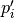 are points
from the target domain contour.
Any physical base domain point that equals
one of the defined will be mapped exactly to corresponding ,
otherwise linear interpolation between adjacent defined points will be made.
are points located on the base domain contour and 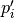 are points
from the target domain contour.
Any physical base domain point that equals
one of the defined will be mapped exactly to corresponding ,
otherwise linear interpolation between adjacent defined points will be made.

fig.1. Grid mapping with different boundary mapping options
To obtain contour mapping user should define at least one reference point on it. However to provide a good final result all characteristic contour points should be reflected in the reference points collection.
Example of mapping of the uniform rectangle grid into a curvilinear quadrangle is depicted in fig.1. If all four characteristic points are used for boundary mapping definition (fig.1a) then all base contour corner points map into target contour corners and all lateral sides of target contour have uniform partition (as it was in the base contour).
To obtain target boundary coarsening and refinement it is possible to define some additional reference points on the laterals (fig.1b, fig.1c). However all such changes of boundary mapping affect the area near the boundaries only. To get smooth internal grid with refinement towards one of the edges base domain grid should be changed accordingly.
If not all corner points are defined in reference point set then this could lead to situations when a corner point is mapped into a lateral segment. If this happens resulting grid would have poor quality (fig.1d).
{kind=link}
fig.2. Mapping of doubly connected domain
In the figure above the example of mapping of a grid in the doubly connected domain is shown. Since base grid has no corner points acceptable result could be obtained using single reference point for each bounding contour (fig.2a), however definition of additional points in order to adopt boundary points distribution increases grid quality (fig.2b).
The order of points in reference points set doesn’t matter. However this set should be valid, i.e.:
- if points are located on the same base contour, then corresponding points 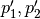 should be located on the same target contour;
- if base contour points are located on the same base contour and point 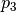 lies between them then point 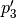 should lie between corresponding points on the target contour.
Algorithms¶
{kind=link}
fig.3. Domain mapping
Let  and denote base and target domains
which are defined in two dimensional spaces
and denote base and target domains
which are defined in two dimensional spaces  and 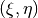 respectively (see fig.3).
To map a grid defined in into the domain we have to build
continuous coordinate system transformation: 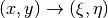 and apply it to all
grid vertices.
and 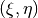 respectively (see fig.3).
To map a grid defined in into the domain we have to build
continuous coordinate system transformation: 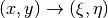 and apply it to all
grid vertices.
Hybmesh provides two methods of building such transformation. Both are based on a solution of the Laplace equations system supplemented by boundary conditions of the first kind. Problem formulation for the first one (later referenced as the direct Laplace algorithm) is given in terms of functions 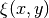, 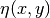 defined in the base domain:
(1)¶
where 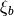, 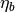 are known boundary mapping functions. After the solution of (1) is obtained further grid mapping is straightforward.
Second algorithm (later referenced as the inverse Laplace algorithm) is based on a formulation in terms of functions 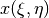, 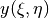 defined in the target domain:
(2)¶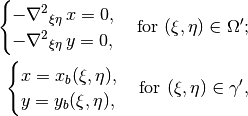
where 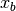, 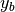 are known boundary mapping functions. Functions , which are required for grid mapping are obtained by inverting the functions , gained as a solution of the system (2).
These algorithms are not generic. To build a single valued transformation, functions obtained as the solution of governing systems (1) or (2) should not contain local extrema and saddle points in the inner domain. The first property is provided by the choice of governing equations however saddle points may occur for certain boundary conditions. It is only guaranteed that
- transformation obtained by the direct Laplace algorithm is correct if target domain is convex;
- transformation obtained by the inverse Laplace algorithm is correct if base domain is convex.
Violation of the above conditions doesn’t inevitably lead to incorrect mappings. Ambiguous transformations occur only near the “sharply concave” domain edges. Furthermore, even if such transformation was obtained but all grid points stay outside ambiguous zones, then the result will still be fine.
{kind=link}
fig.4. Mapping to and from a concave domain
For example let us consider mapping of the uniform rectangle grid into a domain with M-shaped top side (see fig.4). Since the base domain is convex we can securely do it using the inverse Laplace method (fig.4b); the direct Laplace algorithm gives improper mapping and self-intersected grid as it is shown in fig.4a. If we swap the roles of base and target domains, i.e. try to map M-shaped grid into a rectangle, then, on the contrary, only the direct Laplace algorithm will provide a single-valued transformation (fig.4c). The inverse method gives improper mapping, i.e. some points of the target domain are mapped outside the base domain, however, as soon as all inner base grid points have single-valued images at target domain, the program is able to assemble valid, although not qualitative grid (fig.4d).
The proper method for grid mapping depends on a shape of input domains. Since in practical applications base domains are often chosen to be smooth and regular then the inverse Laplace algorithm seems to be more robust, however in some cases the direct method provides better mapping near the boundaries (see examples in fig.4c, fig.5).
{kind=link}
fig.5. Comparison of direct and inverse algorithms applied to a doubly connected domain
Snapping¶
The domain of a grid obtained by mapping procedure will not exactly equal the target domain until boundary mapping for each valuable target domain vertex is explicitly defined (see fig.6a). However the program can evolute a special postprocessing procedure which modifies resulting boundary vertices with respect to original target contour.
{kind=link}
fig.6. Grid map with snapping. Magenta markers denote target domain vertices.
With the snapping option “Shift vertices” all boundary vertices of resulting grid will be shifted to closest valuable target vertex (see fig.6b). Option “Add vertices” forces all boundary edges be extended by target vertices which lie between edge end points ( see fig.6c). The latter guarantees that the resulting domain will be equal to the original target domain, however it changes grid topology so that it won’t be the same as the topology of the base grid.
Snapping for each boundary edge will only take place if it is valid, i.e. it will not result in intersections with internal grid edges.
Python interface function: map_grid().
See also: Custom Rectangle Grid, Square in Circle.
Contour Operations¶
Contour 1D meshing¶
Simple contour meshing¶
The most simple way to perform contour 1D meshing is to define desired step and pass it along with the contour to hybmesh. If input contour is smooth enough then equidistant meshing will be done. Sometimes it is necessary to define some refinement to contour discretization. This could be done by setting reference points conditions. Reference points should lie on the contour. They act as a size function source to their left and right side along the contour until another reference point or contour end. These points will not be a part of resulting segmentation. Results of contour meshing with different conditions could be seen below.

fig. 1. Contour meshing with constant step and reference points options.
User can also define a desired number of resulting contour segments. If that was done then for constant step method given step plays no role at all. If reference point method was applied then refinement given through these points will be preserved but scaled in order to match fixed segment number condition.
{kind=link}
fig. 2. Contour meshing with fixed segments number, relative refinement.
Sometimes contour contains points which must be kept in a 1D discretization. This procedure provides four mechanisms of keeping such points:
- explicit definition of such points;
- definition of tells program to keep all input contour vertices
which provide turns outside of degrees range.
So by setting
 algorithm will keep all original target contour vertices
except those lying on the straight line
and will disable that option. If
algorithm will keep all original target contour vertices
except those lying on the straight line
and will disable that option. If  then
all original vertices will be preserved;
then
all original vertices will be preserved; - with option keep boundary = True algorithm will not throw away original vertices which provide boundary contour types changes;
- along with target contour user can define a set of other contours with crosses option. Algorithm will calculate all intersection points between them and the original contour and put all those points into resulting segmentation.
{kind=link}
fig. 3. Contour meshing with different , meshing with cross contour given.
Python interface function: partition_contour().
Matched contour meshing¶
{kind=link}
fig. 4. Matched contour meshing with reference point and contour condition
As the previous contour meshing algorithm, matched meshing provides routine to build 1D grid using given size function conditions. In simple meshing method those conditions were defined on the contour and act along the contour line only. Here conditions work in a 2D area with given influence radius and power. As a size function source a set of standalone points with referenced sizes or another contours could be used. In the latter case conditional contour partition by itself is treated as a size source.
To apply this method user has to define constant step size, which will be used in areas where no conditions are acting and as a term to define weighted size in areas under the influence of conditions. User also defines a zero angle to tell algorithm to keep corner points. The default value is 30 degrees. If conditional contour intersects target contour, then intersection point will be calculated and preserved in the resulting mesh.
This procedure could be useful for building 1D meshes prior to unstructured constraint triangulation of areas. See example of usage in Example 6.
Python interface function: matched_partition().
3D Grid Building¶
TODO